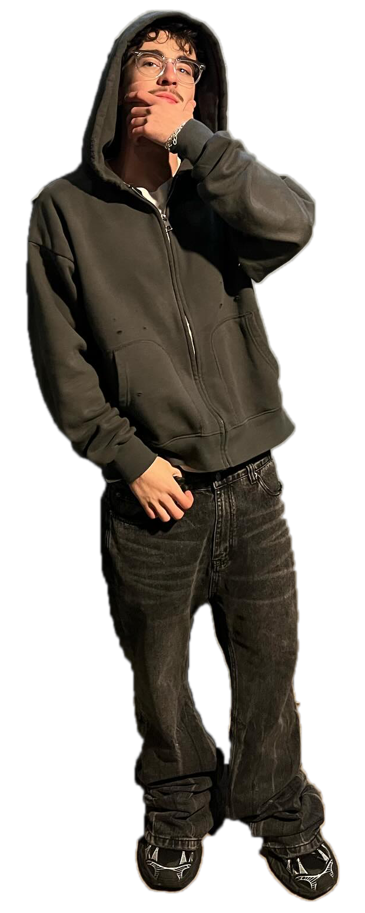

TikTok / urmăritori
20K+
15K pe contul principal

To whom it may concern,
AWGERIC este creator de conținut în scena rapului underground românesc, cu focus pe artiști noi, lansări și cultură online.
Conectat cu artiști și comunități din rapul underground românesc și regional.
Și alți artiști din scenă.
Parteneriate firești pentru publicul, conținutul și comunitatea AWGERIC.